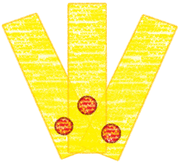
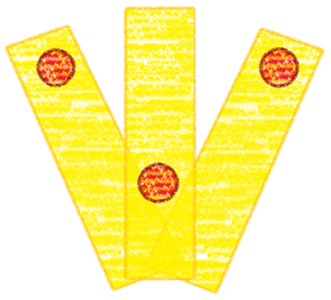
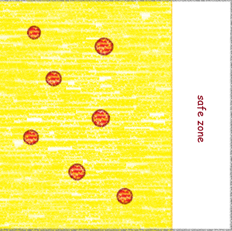

Murong Yuan Sword Trial 71 - Quick Guide¶
- All credit goes to source:
Murong Yuan 3 Minutes Guide - Sword Trial Quick Boss Guide by WhereWeebsMeet
Note
I apologize in advance for the poor image quality.
Important
This boss’ core gameplay relies on exploding barrels to wipe out the team. To avoid this separate the red glowing barrels that are close to each other until they stop glowing.
DPS should move the barrels since Healers are busy healing and tanks will drop the barrel if hit.
Boss Skills¶
Yellow Target Lock¶
During this skill, three players will get a yellow circle around them. If you get this, spread out but be careful not to stand next to a glowing barrel.

After spreading out, iff you have high HP, stand next to a non glowing barrel to detonate it. This will damage you but not enough to kill you. The benefit of this is that the team will have less barrels to move during the Sea of Fire skill.

Summon Firebird¶
During this skill, Yuan will summon the bird somewhere in the stage (this is sometimes indicated by a red downward arrow if you spot it early). Along with the bird are three glowing barrels.

To deal with this, some of the DPS should quickly move at least 2 barrels outside the bird’s circle to remove the glow from the barrels. The other DPS should quickly kill the bird before the timer ends.
Tip
You can leave one non glowing barrel inside the circle to detonate it to lessen the barrels that needs moving for the Sea of Fire skill. However, if you do this, make sure to have the Healer on standby to quickly heal you back up.
3-line Bombard¶
Note
This is actually an unnamed skill so I am going to refer to it as 3-line Bombard.
At the start of this skill, 3 glowing barrels will be dropped at the beginning of each line.

Before the timer reaches the end of the line, 2 members should move 2 of the glowing barrels at the end of each line to safely detonate them thus also reducing barrels that need to be carried from the Sea of Fire skill.

Coward¶
This is a multi hit attack that can be parried but it is safer to just avoid it. The benefit of parrying it though is that it helps reduce Yuan’s Qi bar. Personally, I would just avoid it.

Army Breaker¶
This is the same as the skill Coward which can also be parried. It is also just best to avoid this. Yuan will most likely prioritize targeting the tank once she uses this skill so the tank should pull Yuan away from other members.

Sea of Firebird¶
For this skill, Yuan will go to the center of the stage and summon many glowing barrels. At this point, all members, except the tank, should prioritize putting distance between all glowing barrels within the yellow zone if possible to make sure the bird detonates them all thus reducing the amount of barrels that are in the stage.

Tip
The Tank’s job is to pull Yuan’s aggro towards the safe zone to let other members freely move the barrels.
Once most, if not all, of the glowing barrels are not glowing anymore, the other members should rush towards the safe zone. The Healer then should drop a heal skill just in case.

Severance¶
This is an instant wipeout skill. Yuan locks a member in a standoff and at the same time she will also gain a shield that other members need to deplete as soon as possible before the timer runs out.

Final Thoughts¶
Sometimes Yuan enchants her blade with fire making her attacks detonate barrels when she hits them. The Tank should watch out for this and make sure they pull Yuan away from the barrels if other members are at risk of getting hit.
Equipping the mystic skill Golden Body, especially if its maxed, can help survive Yuan’s heavy hitting skills. This is a useful emergency skill when healing is down or when there are players within the blast zone of glowing barrels.